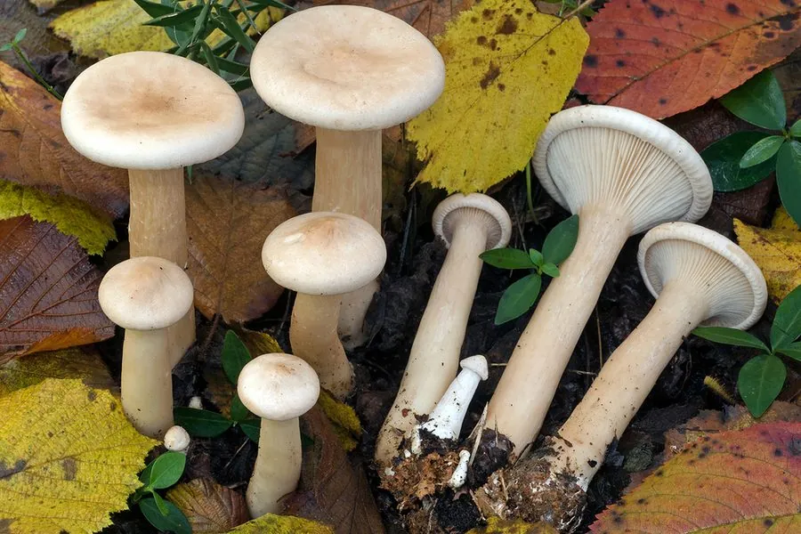

真菌 · 真菌界
大杯伞 Clitocybe maxima

大杯伞的菌盖呈大型漏斗状，直径可达 30 cm，灰褐色、表面有细绒毛，菌肉厚实，是夏秋季林地中显眼的大型食用菌。
- 分类
- 门担子菌门纲伞菌纲目伞菌目科口蘑科属杯伞属
- 栖息环境
- 阔叶林与混交林地面，靠分解落叶和腐殖质生活
- 地理分布
- 中国南北各地林区，东亚温带与亚热带常见
- 保护级别
- 暂无评估（IUCN 未评估，中国未列入重点保护名录）
物种志
大杯伞是担子菌门口蘑科的大型真菌，子实体单生或群生。菌盖呈漏斗状或杯状，直径 10–30 cm，中央深深下凹，边缘内卷或呈波浪状；表面灰褐色、淡褐色至灰白色，覆盖细密的绒毛或粉霜，干燥时略呈丝光。菌褶延生、密集，白色至淡黄色。菌柄粗壮，长 5–15 cm，直径 2–5 cm，白色至淡褐色，基部膨大，菌肉白色、厚实。孢子印白色。
大杯伞生于阔叶林和混交林的地面，靠分解落叶和腐殖质生活，夏秋季出菇，在中国南北各地林区都有分布，常成大片出现。它体型大、菌肉厚，是山区常见的野生食用菌，可切片炒食、炖汤和干制。但杯伞属中包含有毒种类，例如含毒蕈碱的白霜杯伞，误食会引起流涎、出汗、呕吐等症状，因此采食大杯伞必须准确辨认，拿不准的不要入口。
形态与习性
- 菌盖漏斗状，直径 10–30 cm
- 表面灰褐色，覆盖细绒毛或粉霜
- 菌褶白色至淡黄色，延生密集
- 菌柄粗壮，长 5–15 cm，基部膨大
- 孢子印白色
- 食用性可食，但须与有毒杯伞区分
- 生境阔叶林与混交林地面
趣味知识
- 大杯伞的菌盖像个大漏斗，直径能长到 30 cm。
- 它常成大片出现在林地上，是夏秋季显眼的大型菇。
- 杯伞属里有含毒蕈碱的有毒种类，采食必须认准。
- 大杯伞菌肉厚，切片炒食或干制都不错。